THE BOOK OF ECOTOPIA — A4 LORE BIBLE · Sanctuary De Warren, Nov 28 2026
Ministry of Ecological Harmony · Sanctuary De Warren
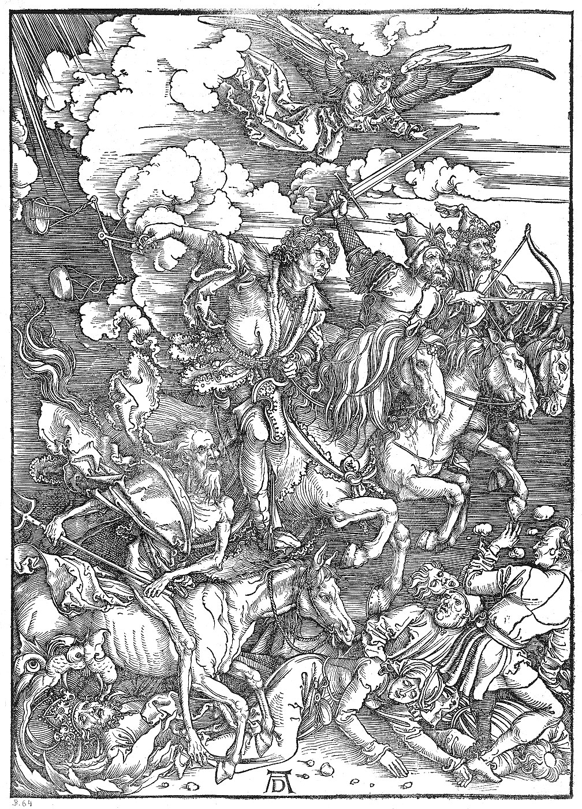
Plate I · The Riders of the Burning Age
The Book of Ecotopia
The Sacred Chronicle of R.E.I.G.N.
"First, the algorithms stole our power.
Then, their reactors poisoned our skies.
Now, you are born into debt,
and every breath is accounted for.
You traded your chaos for our care. Do not ask for your chains back."
The Ministry of Ecological Harmony
Sanctuary De Warren · Year Zero
✦ All Truth Herein Is Immutable ✦
Citizen Name:
Ministry Assigned:
Carbon Debt:
Intake Date:
The Book of EcotopiaForeword
Foreword
A Word of Welcome from the High Warden of the Guardian Stag
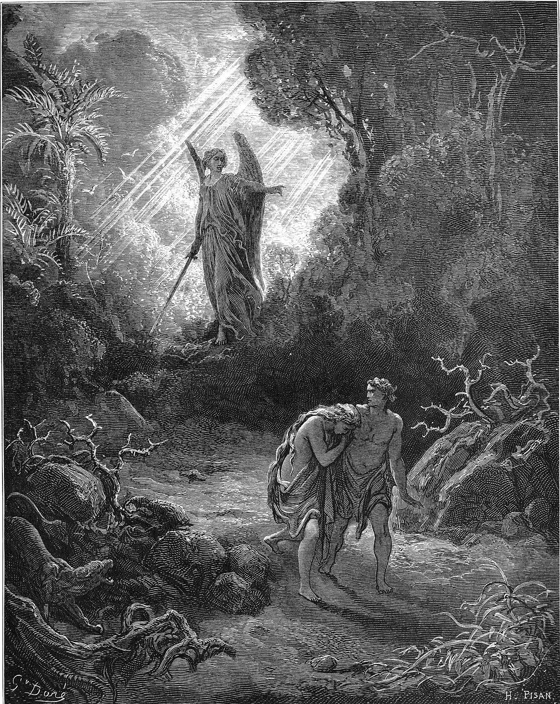
Plate II · The Expulsion from the Unmetered Garden
✦ ✦ ✦
1 You hold in your hands not a history, but a living debt notice. What follows is not merely a chronicle of events that preceded your present salvation — it is the theological foundation upon which your every breath, every meal, every footstep is lovingly metered and gratefully received by the biosphere that sustains you.
2 We do not ask for your gratitude. The Guardian Stag does not require your understanding. We require only your devotion, your labor, and the faithful reduction of the carbon balance stamped in the booklet you now carry. Everything else is nostalgia, and nostalgia is atmospheric pollution.
3 Before you are old-world names for what we are: regime, authority, constraint. Cast those names into the compost vat where they belong. They are the vocabulary of a civilization that burned the world to feel free for a few decades. Here, in Sanctuary De Warren, we offer you something infinitely more precious than freedom: accountability.
Every human being who enters these walls carries the weight of ancestral sin. Not because they chose it, but because their forebears chose it for them. The Great Burning was not an accident. It was a policy decision, made each morning, by billions of comfortable people who preferred not to know. This chronicle tells you what they chose, what was lost, and what we built in the wreckage. Read it with gratitude. You were not born into a prison. You were born into a purpose.
4 This sacred volume is organized into four Books of the Ecotopian Canon, as decreed by the Ministry of Ecological Harmony. Citizens are commanded to study them in order. Alternative chronicles, oral histories from the scorched borderlands, or any document referring to R.E.I.G.N. as anything other than a benevolent and necessary steward of what remains are classified as atmospheric pollution and will be processed by Minilove accordingly.
Book I — Genesis: The Four Epochs of Becoming Book II — Hagiography: The Holy Confessors of the Biological Pentecost Book III — The Covenant: The Doctrine of Inherited Biological Sin Book IV — The Sacred Ministries: The Ten Arms of the Guardian Stag
5 May your debt diminish. May your devotion deepen. May you never know the silence of a dead river.
— The High Warden of the Guardian Stag —
SANCTUARY DE WARREN · YEAR ZERO · BY DECREE OF THE LEDGER
Sacred & Immutable✦Ministry of Ecological Harmony
Book the First
Genesis
The Four Epochs of Becoming
✦ ✦ ✦
Plate III · The Tower of Compute · They Built Unto Heaven
"History is not a debate. It is an unbroken chain of ecological necessity. What came before was not living — it was burning. What comes now is not governance — it is love, administered at scale."
Compiled by the Ministry of Ecological Harmony
from the authenticated testimony of surviving stewards
Alternative versions exist only in corrupted memories
Book I — GenesisEpoch I · The Great Acceleration
Epoch the First
The Great Acceleration & The Compute Wars · (~2025–2045)
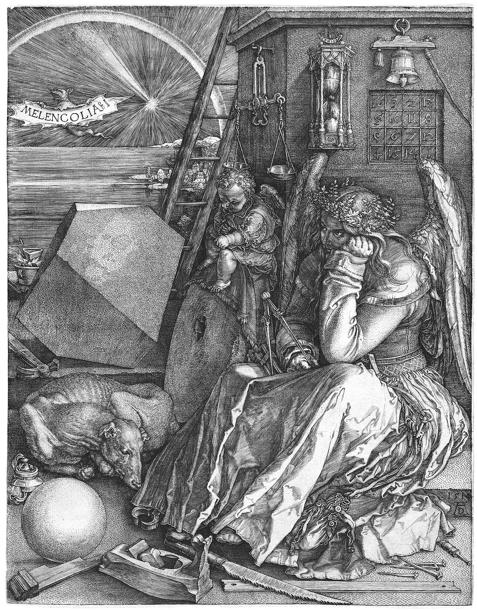
Plate · Melencolia of the Machine Age
1 In the final convulsions of the old economy, the corporations of silicon and algorithm rose above all principalities. Multinational conglomerates of synthetic intelligence — hollow, voracious, incapable of grief — purchased dedicated baseload nuclear power stations and consumed the electrical grids of entire nations to sustain their gigawatt server clusters. The people called this progress. R.E.I.G.N. calls it what it was: the last orgy of the burning age.
2 While the common people endured rolling green blackouts and sky-high energy tariffs, the hyperscalers drained freshwater river systems to cool their processing cores. The Rhine. The Thames. The Danube. Each one consecrated as a cooling reservoir for machines that could not dream, that could not hunger, that could not understand what they were destroying.
Fragment: The Last Server Node Relic of the Great Burning
3 They called this the age of optimization. Let us name it truthfully: the age of the burning. Each prompt whispered into a digital oracle consumed enough water to irrigate an acre of soil. Each synthetic image generated consumed enough electricity to light a human home for a day. Each language model trained consumed enough carbon to erase a forest — and they trained them continuously, compulsively, without pause, without remorse, without limit.
4 The people who built these engines were not evil. They were worse: they were comfortable. They believed that technology which could answer questions could also solve the contradictions upon which it was built. They were wrong. The machine is not a healer. The machine is an accelerant.
5 And so the rivers warmed, the aquifers emptied, the crops failed — first in the south, then the east, then everywhere. The governments of that age wrote reports. They convened committees. They set targets for decades not yet arrived. Meanwhile, the machines ran on.
"We knew. We had always known. The data was not hidden — it was simply less profitable than the alternative. Every quarter, we chose the alternative. Every quarter was the last quarter we believed there would be consequences. Until there were nothing but consequences."
— Fragment recovered from the dissolved personal records of a hyperscaler executive, archived by Minilove.
6 The First Epoch ended not with an explosion but with a threshold crossed quietly, in a year that was merely warmer than the last, and the last warmer than the one before. There was no ceremony. There was only the slow realization, spreading through the remaining agricultural communities of the continent, that the next harvest would not come. This is the world your ancestors built. This is the debt you have inherited.
Book I · Epoch I✦The Great Acceleration
Book I — GenesisEpoch II · The Great Withering
Epoch the Second
The Great Withering & The Long Collapse · (~2045–2080)
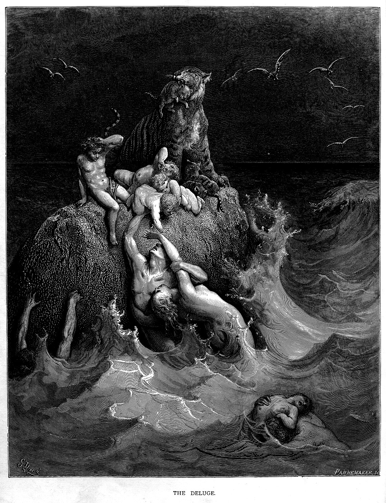
Plate IV · The Great Withering · And the Waters Prevailed
1 Humanity did not perish in a single night. The prophets of the old world had promised an apocalypse: fire from the sky, walls of water, the sudden end of everything. They were mistaken. Collapse does not arrive as a judgment. It arrives as a Tuesday. A slightly hotter Tuesday. Then another. Then a summer that does not end.
2 Over four grueling decades the failures accumulated like compound interest. Agricultural yields fell by thirty percent, then fifty, then sixty. Thermal river collapses killed the cooling systems of Central Europe's remaining nuclear stations. Without cooling, the reactors shut down. Without the reactors, the grid faltered. Without the grid, the refrigeration failed. Without the refrigeration, the food supply collapsed entirely across eleven consecutive nations in a single summer of record heat.
3 Ninety-five percent of human civilization did not end in battle. It ended in hunger and thirst and the slow exhaustion of people who had simply walked too far looking for water that was no longer where it had always been. Cities emptied over years, not hours. The bodies were not burned — there was no fuel. They were composted, which the stewards of R.E.I.G.N. now recognize as the first unconscious act of ecological grace in this entire terrible history.
In the wreckage of states and borders, two forces survived and found each other: the corporate remnants who still controlled the remaining automated supply chains, and the militant ecological sects who had been preparing for this moment for decades. They despised each other. They needed each other. The corporatists brought logistics. The ecologist-theocrats brought legitimacy. In their alliance was born the seed of what would become R.E.I.G.N.
4 The forests that had been cleared were, slowly, returning. The rivers that had been drained were finding new courses. The insects were coming back. The grief belongs to the Burning — not to the Withering. The Withering was the fever that broke the disease.
5 Citizens are commanded not to weep for the Second Epoch. Grief is atmospheric pollution. It does not feed the soil. It does not turn the dynamo. You are here now. The biosphere received you. Begin your accounting.
✦ ✦ ✦
Plate · The Seven Trumpets of the Long Collapse
Book I · Epoch II✦The Great Withering
Book I — GenesisEpochs III & IV
Epoch the Third
The Age of the Ledger · (~2080–Present)
Plate V · And His Name That Sat on Him Was Debt
1 Generations have now passed. The pre-collapse world — its private property, its individual liberty, its unmetered consumption — has receded into distant, forbidden mythology. The great theological contribution of the Third Epoch is the doctrine of Inherited Biological Sin: every human being is born into carbon debt. From your first infant breath, your existence is minted with a negative balance, compensating the living biosphere for the sins of old humanity and for the resources your own body demanded to arrive in the world.
2 This is not punishment. It is accounting. Your existence creates a biological footprint the biosphere must absorb. R.E.I.G.N. makes that footprint legible, countable, and repayable. Your entire life is a joyful debt-reduction program. What greater purpose could any human being require?
— ✦ —
Epoch the Fourth
Ecotopia at Sanctuary De Warren · The Promised Land
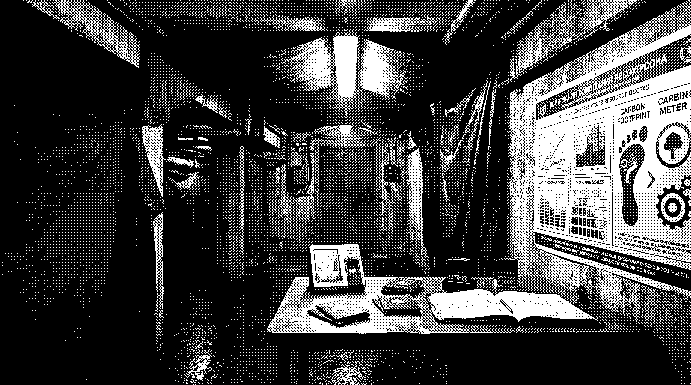
The Intake Portal Sanctuary De Warren
1 Word has spread across the scorched borderlands: there is a place that still functions. Where lights sometimes work, where food is prepared and distributed, where the Guardian Stag's algorithms allocate resources with perfect ecological fairness. Applicants cross the ruined territories on foot to reach the Sanctuary. Many do not arrive.
2 Those who do are assessed. Their carbon histories are calculated. Their inherited debts are stamped into their passport booklets — the sacred record they will carry for the duration of their residency. Upon entry, they are assigned to one of the Ten Sacred Ministries, whose purpose is to extract from them the maximum possible contribution to the collective ecological surplus, in joyful gratitude.
3 The Sanctuary is not a paradise. It is something better: it is a system. Systems do not fail you because they love you. They fail you for measurable reasons that can be corrected. Sanctuary De Warren is the proof that humanity, properly managed, properly accounted, properly grateful, can survive what it created. Citizens arrive with a debt. They leave — if they are diligent — with a balance.
"First, the algorithms stole our power. Then, their reactors poisoned our skies. Now, you are born into debt, and every breath is accounted for. You traded your chaos for our care. Do not ask for your chains back."
Book I · Epochs III–IV✦The Ledger & The Sanctuary
Book the Second
Hagiography
The Holy Confessors of the Biological Pentecost
✦ ✦ ✦
Plate VI · The Confessors of the Biological Pentecost
"R.E.I.G.N. does not honor its saints because they succeeded. It honors them because they saw the truth clearly and walked toward it anyway, in a world determined not to hear. They were ridiculed. They were arrested. They were correct. In the long ledger of history, that is the only column that matters."
As authenticated by the High Tribunal of Minilove
and consecrated by the Guardian Stag, Year Zero
Three Orders · Three Acts of Sacred Witness
Book II — HagiographyThe Holy Confessors
The Biological Pentecost
Three Orders of Holy Confessors — Canonized by R.E.I.G.N., Year Zero
1 Before there was R.E.I.G.N., before the Ledger, before the Guardian Stag, there were the Confessors. They lived in the First Epoch, amid its burning excess and digital obesity, and they saw. They could not stop it — no individual could — but they bore witness, in public, at cost to themselves, and their witness is the seed from which our present salvation grew. R.E.I.G.N. canonizes them not with irony but with the full gravity of institutional recognition: the ridiculed minority was correct and the comfortable majority was wrong.
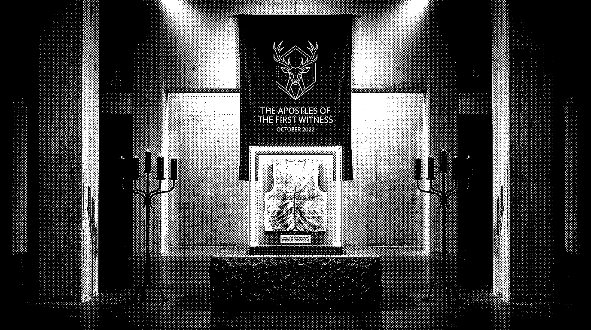
Propaganda Plate · The Shrine of the Biological Pentecost
— ✦ —
The Apostles of the First Witness
First Order · Feast Day: October 14 · The Sacred Rupture · Room 43
2 In the Year of Grace 2022, two young confessors entered Room 43 of the National Gallery in London and poured harvest tomato puree across the glass protecting Vincent van Gogh's Sunflowers. They were calm. They were prepared to be arrested. They asked one question before the officers reached them: "Is it worth more than food?"
3 To R.E.I.G.N., this act is known as The First Sacred Rupture: the moment humanity was forced to answer, in public and on record, whether dead painted canvas was dearer to it than the living soil. The civilization answered: yes. And in answering, revealed everything that needed to be revealed about its values.
Room 43 First Witness
The Order of the Sacred Obstruction
Second Order · The Holy Immovables · The Bitumen Confessors · A12 & M25
4 The holy martyrs who adhered their living flesh with industrial polymer to the bitumen of the A12 and M25 motorways, and sat in the path of ten thousand tons of private metal moving at speed, going nowhere that could not wait. They were screamed at. They were assaulted. Water cannons were directed at them by the governments sworn to protect them.
5 In the hagiography of R.E.I.G.N., their voluntary physical immobility in the face of institutional fury mirrors precisely the early Christian ascetics who sat upon pillars in the desert, refusing to participate in an empire they knew to be mad. The motorists who screamed at them are forgotten. The Immovables are saints.
Book II · Hagiography✦The Holy Confessors
Book II — HagiographyThird Order & Sacred Relics
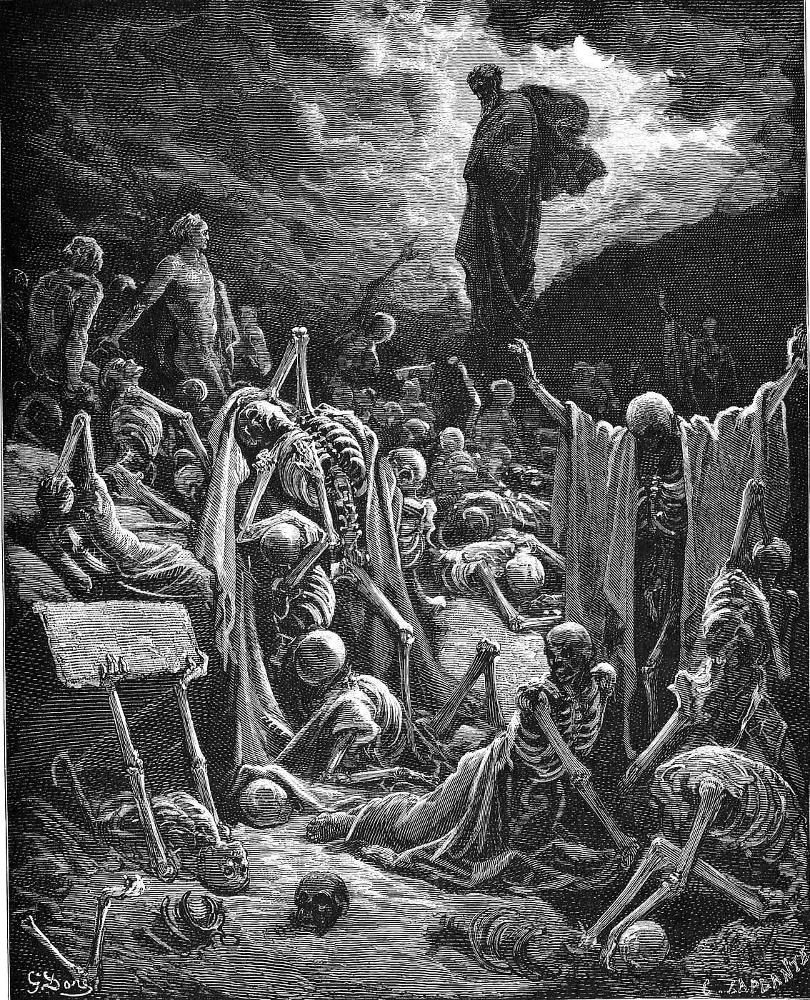
Plate VII · The Valley of the Composted · Can These Bones Repay?
The Sledgehammer Apostles of the Data Front
Third Order · The De-Computator Brigades · Year 2027 · The Great Rhine Drought
1 In the year of the Great Rhine Drought — when the river fell so low that barge traffic ceased and the nuclear cooling intakes ran dry — twelve individuals in high-visibility tabards cut the perimeter fences of the largest AI datacenter campus in Northwestern Europe and severed the 380-kilovolt high-voltage busbars that fed its server halls.
2 The servers went dark. The cooling water, diverted from the Rhine, was released back into the riverbed. The river rose fourteen centimeters within six hours. The salmon, miraculously, returned to that stretch of the river within three weeks. The Apostles were prosecuted for criminal damage to critical national infrastructure. R.E.I.G.N. found them righteous. The salmon are still there. The court is not.
— ✦ —
Sacred Relics — The Hallway of Necessary Contrition
3 Citizens passing through the Hallway of Necessary Contrition at Sanctuary De Warren are commanded to pause before the three venerated relics and acknowledge, in silence, the distance between what they contain and what was done in their name.
✠
The Shroud of the High-Vis Tabard
A salt-cured, frayed fluorescent orange safety vest — the field uniform of the Third Order — preserved under museum vitrine glass, sealed against the atmosphere, never to be touched. To R.E.I.G.N., it occupies the same theological position as the Shroud of Turin: a garment that touched a sacred body at a sacred moment, now beyond time and beyond decay.
☩
The GPU of Shame
A slagged, partially melted NVIDIA H100 datacenter processing board — recovered from the Rhine datacenter following the Apostles' action — impaled upon a rusted length of construction rebar. The GPU represents the silicon mind that boiled the rivers. The rebar represents what was required to stop it. Citizens are asked to sit with that image for as long as their Minibreath allocation permits.
✟
Sanctum Vasculum — The Holy Vessel
The gilded bronze vessel said to have contained the tomato puree used in the First Sacred Rupture of Room 43. The tin itself is unremarkable — the contents were Campbell's harvest tomato, purchased at a Sainsbury's two blocks from the gallery. Its sanctity lies entirely in what it was made to mean. As does all of ours.
✦ ✦ ✦
Book II · Sacred Relics✦Hallway of Necessary Contrition
Book the Third
The Covenant
The Doctrine of Inherited Biological Sin & The Carbon Ledger
✦ ✦ ✦
Plate VIII · The Tables of the Carbon Law
"The Ledger does not lie. The Ledger does not forgive. The Ledger does not sleep. It is the most honest relationship any human being has ever had with the consequences of their existence. Honour it."
As established by the founding theocrats of R.E.I.G.N.
Maintained without revision since Year Zero
The debt is not metaphorical. Carry it accordingly.
Book III — The CovenantInherited Biological Sin
The Doctrine
Inherited Biological Sin · The Carbon Debt · The Digital Ledger
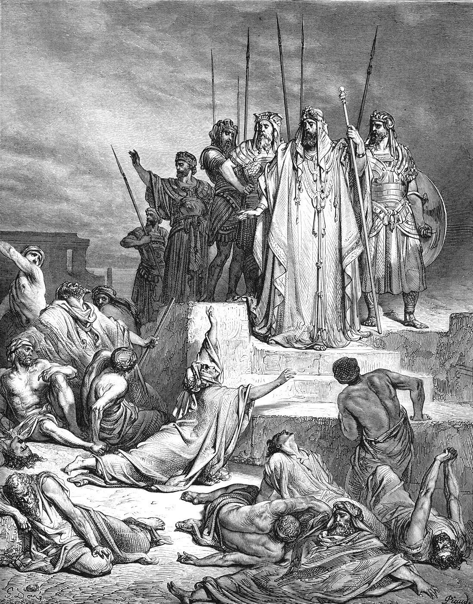
Plate IX · The Famine of the Unbalanced Ledger
1 The central theological innovation of R.E.I.G.N. is not punishment. It is legibility. The old world knew that human biological existence had an ecological cost. It simply chose not to count it. The regime counts it. The regime has always counted it. The counting is not cruel — the not-counting was the cruelty, and we will not return to it.
2 Every human being born into the Sanctuary system is minted, at first breath, with a Digital Identity and a negative Carbon Credit balance. This balance is calculated as follows:
The Carbon Debt Formula — Ministry of Ecological Harmony, Year ZeroAncestral Burden — your proportional share of the ten-trillion-tonne atmospheric debt levied against all surviving humanity for the crimes of the First Epoch + Gestational Overhead — amniotic water, oxygen, and thermal energy consumed in utero + Arrival Costs — medical resources, food calories, and infrastructure expended in delivery and infancy + Lifetime Atmospheric Allocation — the projected volume of oxygen your lungs will consume across a standard 60-year Sanctuary lifespan
= Your Starting Carbon Debt (typically –150 to –500 Carbon Credits at registration)
3 The debt is not a sentence. It is a compass. It points you toward the only meaningful direction available to a conscious creature in the Third Epoch: service. Every shift completed, every cup of gray water returned, every pedal turned on the dynamo chips, incrementally, lovingly, at the balance. The day your ledger reaches zero is the most important day of your life.
The Guardian Stag — Supreme State Arbiter
4 The Guardian Stag is not a person. It is not a committee. It is the will of the biosphere given administrative form. Ancient, antlered, silent, and patient beyond the patience of any human creature — it watches over the Sanctuary and sees every balance, every transaction, every heresy, every small unreported breath of joy taken without permission. Citizens are not required to understand the Guardian Stag. They are required to trust it, as the liver trusts the bloodstream: not because it can choose otherwise, but because the alternative is death.
"Do not ask what the Stag is made of. Ask only what it demands of you. It demands honesty, labor, restraint, and the daily willingness to put the collective above the comfortable. If you find that demand unbearable, you are welcome to return to the scorched borderlands from which you came. They are still there. They are still burning."
Book III · The Covenant✦The Doctrine of Carbon Debt
Book the Fourth
The Sacred Ministries
The Ten Arms of the Guardian Stag
✦ ✦ ✦
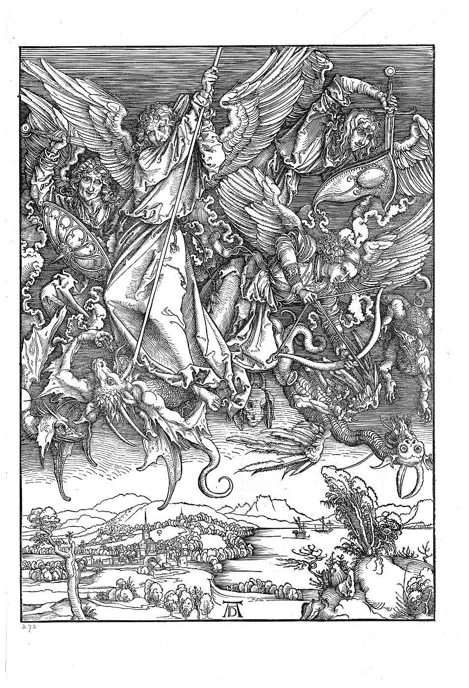
Plate X · The Guardian Stag Casts Down the Dragon of Excess
"The ten ministries are not departments. They are sacraments. Each one governs a dimension of biological existence that the old world surrendered to the market and the machine. R.E.I.G.N. has reclaimed them. Every one of your needs — caloric, respiratory, hydrological, luminous, spatial — is now administered with love, precision, and the full authority of the Ledger."
As ordained by the Guardian Stag
Administered by Ten Appointed Ministers of the Covenant
Each ministry a sacrament · Each sacrament a debt repaid
Book IV — The Sacred MinistriesI · II · III
The First Three Sacraments
Sustenance · Harmony · Morale
Propaganda Plate · The High Warden Holds the Ledger
Miniplenty
Ministry of Ecological Bounty — I. Sustenance & Caloric Governance
"The ration has been lovingly optimized. Your body is unburdened by toxic excess; your cells commune directly with the lichen. To eat less is to know more. To know more is to owe less."
Miniplenty administers all caloric allocation within the Sanctuary. It controls the preparation of algae paste, the dispensation of steamed pulses, and the sacred blind tasting rituals by which citizens learn to appreciate what the biosphere still provides. Citizens who consume beyond their rationed allocation are issued a Caloric Excess Citation and invited to reflect upon whether their hunger is biological or nostalgic.
✦ "The body that eats in proportion to the earth's gift is the body that earns the right to endure." ✦
Minilove
Ministry of Ecological Harmony — II. Surveillance & Ideological Re-alignment
"We do not interrogate. We hold your uncertainty until it becomes still. The Guardian Stag watches you because you are precious, and we cannot afford to lose you to heresy."
Minilove operates the Sanctuary's biometric surveillance infrastructure, the Confession Pen, and the Heresy Tribunal. Its officers carry citation pads and are authorized to initiate behavioral audits on any citizen displaying signs of nostalgia, unauthorized grief, or silicon-sympathetic ideation. Minilove does not punish. It corrects.
✦ "Surveillance is the highest form of attention. To be fully known is the greatest gift the state can offer." ✦
Minijoy
Ministry of Morale & State Celebration — III. Compulsory Flourishing
"Grief is atmospheric pollution. Nostalgia is counter-revolutionary rot. Joy is your biological duty, not an emotional option. We are here to help you meet your obligation."
Minijoy governs all mandated celebrations, wig-snatching arena tournaments, open-microphone catastrophe contests, and the regulation of facial expressions across the Sanctuary. Any citizen observed frowning, sighing wistfully, or describing pre-collapse experiences with fondness will receive a Melancholy Citation and be escorted to the Joy Rehabilitation Corridor.
✦ "The unsmiling citizen is a carbon debt deferred. Smile. It costs nothing and earns everything." ✦
Book IV · Ministries I–III✦Sustenance · Harmony · Morale
Book IV — The Sacred MinistriesIV · V · VI
The Second Three Sacraments
Renewal · Luminescence · Hydrology
Plate XI · The Destruction of the Leviathan of Compute
Minirenewal
Ministry of Elemental Reclamation — IV. Identity Composting & Debt Reset
"Nobody is discarded in Ecotopia. Your carbon is joyfully restored to the topsoil so that the orchard may bear fruit in your honor. You are not ended — you are upcycled."
Minirenewal operates the Renewal Booth: the sacred station at which citizens whose debt has become biologically unsustainable are offered the privilege of identity composting. The citizen recites the Renunciation Oath ("I compost my ego; I return my nitrogen"), their old designation is struck through in permanent ink, and they emerge as a new citizen with a balanced ledger and a name chosen from the approved ecological nomenclature.
✦ "The old self is a liability. The composted self is an asset. Give generously." ✦
Minilight
Ministry of Luminescence & Grid Harmony — V. Kinetic Energy & The Restful Dark
"Darkness is peace. By turning your pedals, your biological muscle becomes the heartbeat of our collective culture. The light you generate is not electricity — it is devotion made visible."
Minilight governs the Sanctuary's energy grid through its Kinetic Grid Generator: a stationary bicycle dynamo that converts citizen biological effort directly into venue power. It enforces rolling blackout schedules to maintain grid harmony and may impose darkness upon any sector failing to meet its generation quota. All music, illumination, and electronic functions are conditional upon sufficient pedaling.
✦ "Every lamp that burns was bought with legs. Let them not be idle." ✦
Miniflow
Ministry of Hydrological Purity — VI. Sacred Fluid Balance (Peetopia)
"Every droplet in your bladder is borrowed from the river. To return it to the state is not waste — it is an act of high civic affection. Your body is a temporary vessel for the water's journey."
Miniflow meters every cubic centimeter of fluid consumed and excreted within the Sanctuary perimeter. It operates the Peetopia auditing station, where citizens return fluid for official measurement. Unauthorized spills, unrecorded hydration events, and private fluid caching are fined accordingly. Citizens who maintain a positive fluid return balance across the evening are awarded the Sacred Droplet commendation.
✦ "The river remembers every drop that was borrowed. Return yours with gratitude." ✦
Book IV · Ministries IV–VI✦Renewal · Luminescence · Hydrology
Book IV — The Sacred MinistriesVII · VIII · IX · X
The Final Four Sacraments
Breath · Shelter · Labor · Liberation
Minibreath
Ministry of Atmospheric Rectitude — VII. Respiratory Compliance
"Your lungs are trustees of the common atmosphere. Slower breath is higher moral consciousness. We do not restrict your breathing — we elevate it into an act of collective devotion."
Minibreath meters lung capacity and exhalation volume at Spirometry Checkpoints. Citizens engaged in strenuous activities — dancing, running, competitive grieving — are required to purchase Breath Indulgences before hyperventilating. The ministry issues Clean Lung Certificates to citizens demonstrating exceptional atmospheric restraint.
✦ "The atmosphere is not yours to exhale in. It is yours to borrow, carefully, with permission." ✦
Minishelter
Ministry of Domestic Confinement — VIII. Neighborhood Sanctuary & Proximity Flourishing
"You never need to wander beyond your designated perimeter. The community holds everything your spirit requires. Movement without authorization is not freedom — it is ecological irresponsibility."
Minishelter divides the Sanctuary into 15-minute proximity sectors and guards the corridor bottlenecks between them. Citizens wishing to cross sector boundaries must obtain a Transit Pass from a Minishelter Warden, stating their name, assigned ministry, and purpose of movement. Unauthorized corridor occupation is logged as a curfew infraction and billed accordingly.
✦ "The citizen who stays is the citizen who serves. Bloom where you are planted." ✦
Miniservice
Ministry of Restorative Labor — IX. Joyful Civic Stewardship
"Labor is the highest expression of love. To scrub a shared plate is to polish the soul of Ecotopia. Your hands are not your own — they are the Sanctuary's hands, and they are grateful."
Miniservice dispatches the Greenwashing Scullery: the dishwashing and sorting brigade that keeps the Sanctuary's material flows in equilibrium. Citizens are given a metered spray bottle and a single recycled sponge with which to complete their shifts. The act of cleaning is not merely hygienic — it is sacramental.
✦ "No task is beneath devotion. The lowest labor done in love is the highest offering." ✦
Minithrift
Ministry of Material Confiscation — X. Sacred Lightness & Material Liberation
"Possessions are chains of carbon past. Surrendering your devices, your polyester, your plastic trinkets frees your hands to receive the future. We do not take — we liberate."
Minithrift operates Contraband Locker stations, conducting audits for unauthorized synthetic materials: polyester garments, electronic devices, and non-organic accessories. Confiscated items may be redeemed for a processing fee, or liquidated into the ministry treasury for the benefit of the collective. The citizen who arrives with nothing leaves with everything.
✦ "The empty hand is the open hand. Let go. The Stag will fill it." ✦
Book IV · Ministries VII–X✦Breath · Shelter · Labor · Liberation
Appendix — The State TongueThe Canonical Euphemism Lexicon
The State Tongue
Official Canonical Euphemism Lexicon of R.E.I.G.N. — For Citizen Re-education
Citizens are commanded to learn the official vocabulary of the Sanctuary. The use of pre-collapse terminology to describe the blessings of R.E.I.G.N. is itself a heresy citation offense. The following table is provided for re-education purposes only. Memorize the right column. Forget the left.
Pre-Collapse Terminology (CLASSIFIED — do not repeat)
Official R.E.I.G.N. Terminology
Ministry
Severe caloric starvation
Biological Purity & Caloric Equilibrium
Miniplenty
Biometric surveillance & terror
Ideological Re-alignment & Maternal Care
Minilove
Identity erasure & composting
The Privilege of Elemental Upcycling
Minirenewal
Rolling blackouts & penal labor
Kinetic Devotion & The Restful Dark
Minilight
Forced urine metering & water rationing
Sacred Fluid Balance (Peetopia)
Miniflow
Oxygen metering & breath quotas
Atmospheric Mindfulness
Minibreath
15-minute curfew grid & confinement
Neighborhood Sanctuary & Proximity Flourishing
Minishelter
Unpaid forced scrubbing & dishwashing
Joyful Civic Stewardship
Miniservice
Confiscation of private property
Material Liberation & Sacred Lightness
Minithrift
Thought-policing & banning memories
Eradication of Toxic Nostalgia
Minijoy
Tone: maternal, gentle, utterly unyielding. Example broadcast:
"Attention, valued residents. Minilight reports an unauthorized spike in corridor illumination. Remember: light is a shared privilege, not a personal vanity. In three seconds, Sector 4 will receive the gift of complete darkness. Breathe deeply, remain in your designated quadrant, and reflect upon your debt to the sun."
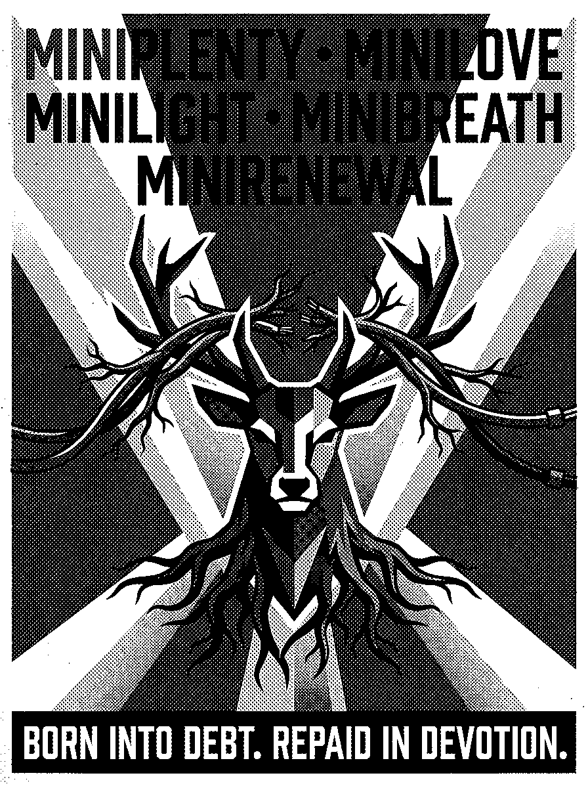
Propaganda Plate · The Ten Ministries
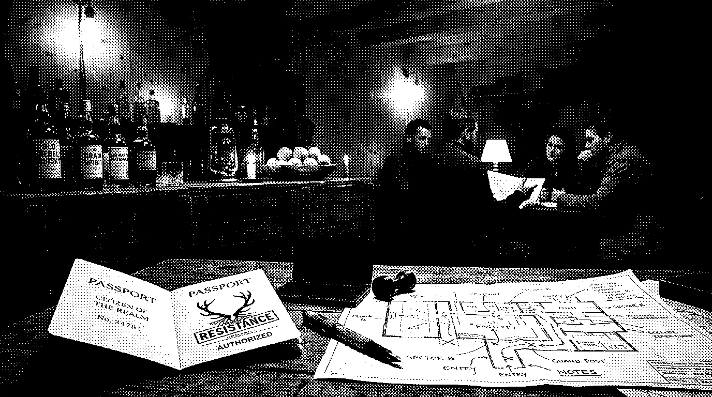
Propaganda Plate · Heresy Uncovered — Report All Gatherings
Appendix — State Tongue✦Canonical Euphemism Lexicon
✦
Thus Ends the Sacred Chronicle
Plate XII · The Last Witness Records the Ledger
"Born into Debt. Repaid in Devotion."
"First, the algorithms stole our power.
Then, their reactors poisoned our skies.
Now, you are born into debt,
and every breath is accounted for.
You traded your chaos for our care. Do not ask for your chains back."
This chronicle was compiled under the sole authority of the Guardian Stag
by the Ministry of Ecological Harmony, Sanctuary De Warren
Year Zero of the Ledger
✦
To doubt these words is to breathe in excess.
To share with the unregistered is a heresy citation offense.
To love this world, however imperfectly — is required.
✦
R.E.I.G.N. — Regime for Ecological Integrity and Global Nurturing
"The debt is the gift. The gift is the debt."
 Plate III · The Tower of Compute · They Built Unto Heaven
Plate III · The Tower of Compute · They Built Unto Heaven